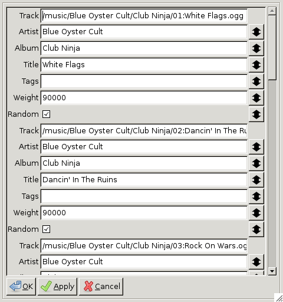

The chapter describes how to edit track properties.

This window can be invoked from any of the four tabs by selecting one or more tracks and then either selected Edit > Track Properties or via the right-click pop-up menu.
The first three fields for each track are the parts of its name: the artist, album and title. These control what appear in the similarly named columns in the queue and other tabs. If they are wrong then you can edit them here to correct them.
The double-headed arrow at the right of each field will copy the current field value to all the other tracks in the window. For instance if an album name is mis-spelled or wrong then you could follow the following procedure to correct it for all its tracks:
Each track has an associated collection of tags. These can used when searching for tracks in the Choose tab or to control which tracks are picked at random (although this functionality is not readily available in current versions of Disobedience).
To add tags to a track enter the tags you want to apply to it in the Tags field, separated by commas. Tags cannot contain commas and are compared without regard to whitespace.
Every track has an associated weight. A higher weight makes the track more likely to be picked at random and lower weight makes it less likely to be picked at random. (In the simplest case the probability that it will be picked is equal to its weight divided by the total weight of all tracks, although there are a number of other factors that modify this.)
If no weight has been explicitly set then the track gets a default weight of 90,000.
One way to prevent a track being picked at random would be to set its weight to zero, but in fact there is a box you can untick to suppress random selection of tracks too.